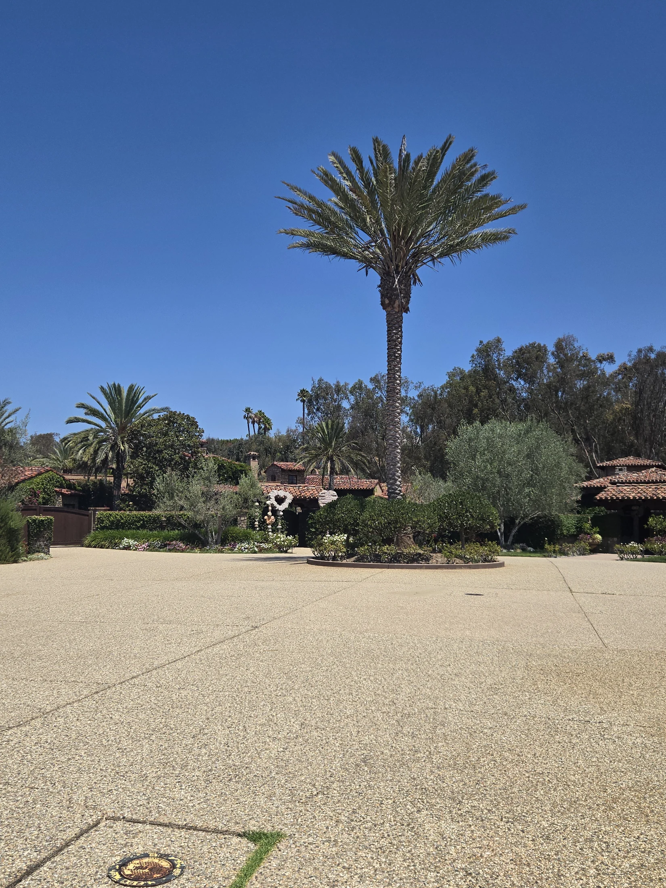
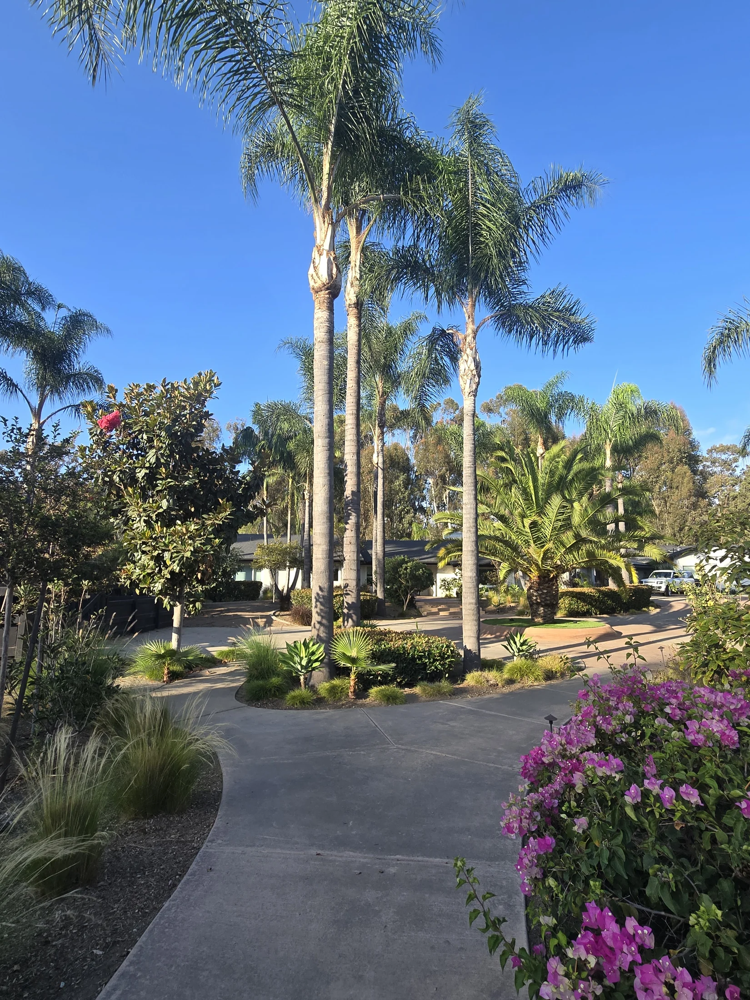

Coordinating removals
Connecting clients with qualified removal contractors when a palm cannot be retained.
Preventive SAPW treatment · Owner-led
SDPP specializes in licensed preventive treatment for South American palm weevil, protecting mature Canary Island date palms and other appropriate high-value specimens.
What SDPP does
SAPW is destroying mature Canary Island date palms across San Diego. Because serious damage can be hidden until decline is advanced, preventive treatment is the heart of SDPP.

Protect the palm while there is still time.
When more is needed
SDPP may also help clients organize the next step for a valuable palm.
Connecting clients with qualified removal contractors when a palm cannot be retained.
Helping organize specimen selection, sourcing, and installation.
Practical guidance and coordination for needs outside the treatment plan.
Urgent response
SDPP responded to an active South American palm weevil infestation with licensed protective treatment for high-value specimens, including Chilean wine palms, Canary Island date palms, and Sylvester palms.
Urgent, owner-led care for palms that matter.
Palm landscapes
A selection of San Diego County palms and gardens photographed by SDPP.




Private inquiry
Tell me about the property, the palms, and what you are responsible for. I work with managed palm portfolios, large estates, and homeowners protecting important mature palms.